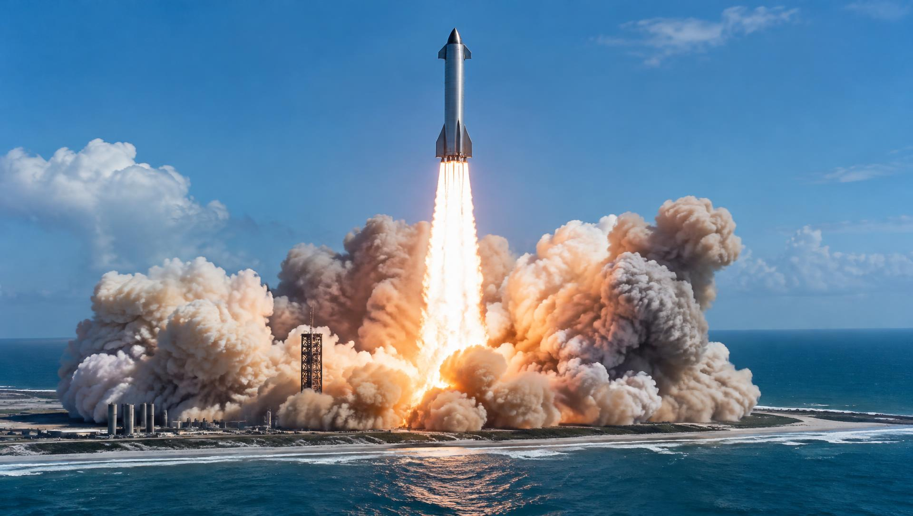
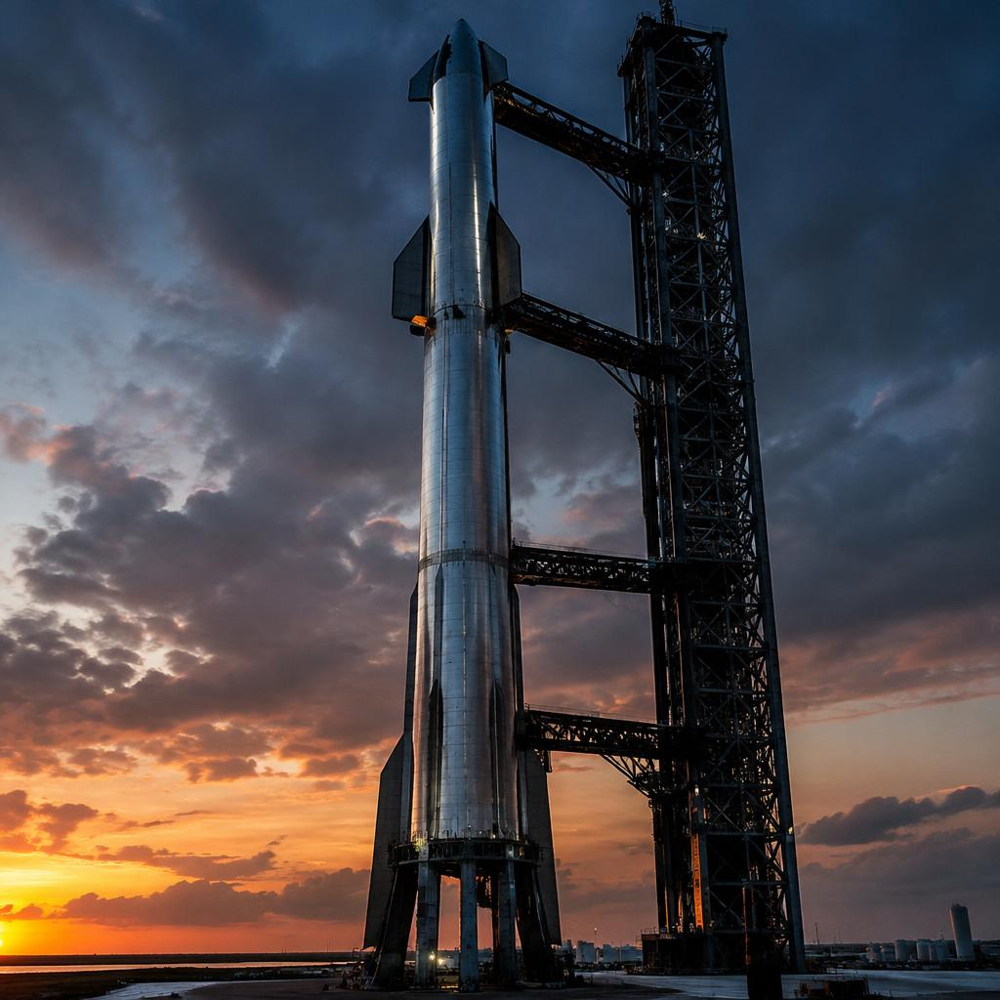
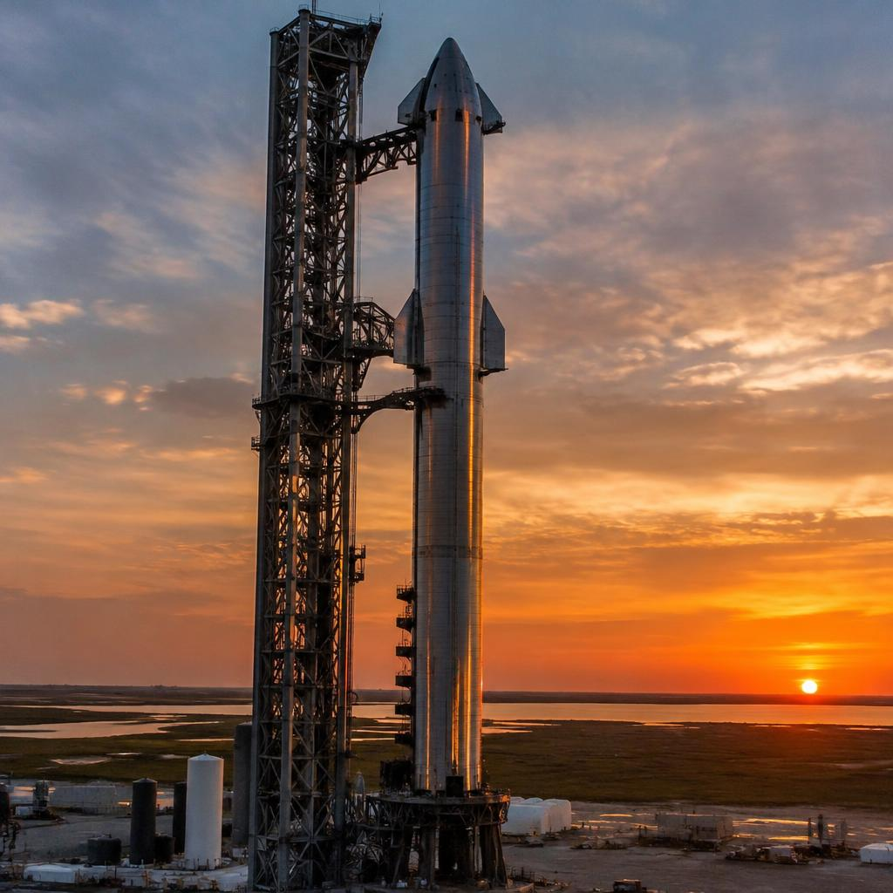
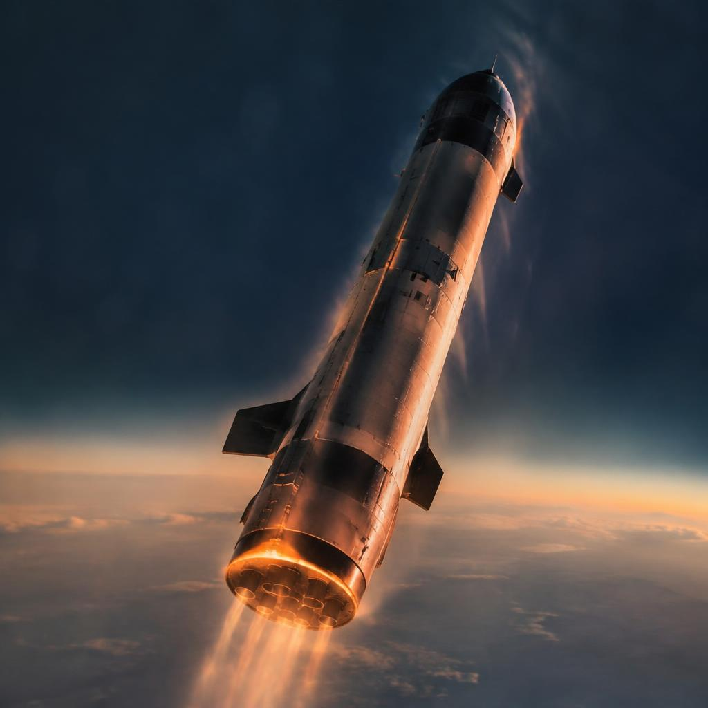

Vehicle · Nova
Nova
A fully reusable super rocket: 121 metres tall, both stages return, and the booster is caught by the launch tower instead of landing on legs.

Two stages, both flown again
Nova is a two-stage vehicle in which nothing is thrown away. The first stage — the Super Booster — is a 71-metre cylinder packed with 33 methalox engines. Above it rides the Ship: a 50-metre spacecraft with its own engines, payload bay, and enough volume to carry 150 tonnes to orbit — pressurised volume included, not just cargo.
Because the Ship is a spacecraft in its own right, Nova missions look different from every rocket in the fleet: the payload can stay attached, fly to the Moon or Mars, and land propulsively on its own engines. The rocket and the spacecraft are the same machine.

Caught by the tower, not landed
Landing legs cost mass and complicate reuse, so Nova's booster has none. Instead, about seven minutes after liftoff it returns to the launch site, falls past the 145-metre integration tower, and is caught mid-air by a pair of movable mechanical arms that grab the booster by its engine-rail fittings.
Catching means the booster never needs to carry landing legs or spare landing propellant — every kilogram goes to performance. It also means the fastest possible turnaround: the arms lower the booster straight onto the transport stand, technicians inspect it, and it can be restacked for its next flight within days.

VX-Raptor — full-flow staged combustion
Nova's engines run on methane and liquid oxygen. Methane burns cleaner than kerosene — no coking inside the engine, so the hardware survives dozens of reflights — and can one day be manufactured on Mars from atmospheric CO2 and subsurface ice, using the Sabatier process.
The VX-Raptor engine uses full-flow staged combustion: nearly all of both propellants are burned in pre-burners before entering the main chamber, driving the turbopumps with more power and running cooler than other cycles. Each engine produces about 2,300 kilonewtons; thirty-three of them lift the full stack.

Refuelling in orbit
Going to the Moon or Mars takes more energy than a single tank can carry, so Nova is designed to be refuelled in space. A tanker variant launches, delivers its entire 150-tonne propellant load to orbit, and docks with a waiting Ship. Four to six tanker flights fill one Ship for trans-lunar injection — the same routine as an aerial refuelling, done with cryogenic propellants.
The Ship itself returns like a spacecraft: it reenters belly-first behind a hexagonal-tile heat shield, flips vertical in the final seconds, and lands on its engine plume. Both halves of the biggest rocket ever built are back on the ground — ready for the next flight.
Nova catch-1